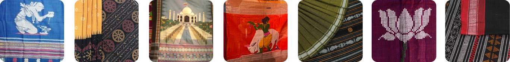

History and Culture
Celebrating the timeless artistry of Dhalapathar Ikat – A heritage of Odisha
Introduction of the
Dhalapathar
History
About the Village

About a century ago, the village of Dhalapathar, located in Khordha district, emerged as a notable center for hand-loomed sarees. The Rangani community, integral to this weaving tradition, has been practicing their craft for over a century. Known for their exceptional dyeing and weaving skills, the Rangani produced sarees like Kusumi Kapta, Kankana Pedi, Muktapunji, Nahati, and Akata, which were highly valued, especially as bridal attire in regions such as Cuttack, Sonepur, and Madhya Pradesh


Demographic
About the People
It is located 52 KM towards west from District head quarters Khurda. 14 KM from Bolagarh. 55 KM from State capital Bhubaneswar. Dhalapathar Local Language is Oriya. It’s total population is 1110 and number of houses are 251. Female Population is 48.4%. Village literacy rate is 81.4% and the Female Literacy rate is 38.0%. Dhalapathar is well-equipped with Educational Institutions, Health Centers, Transportation options, and various amenities, making it a well-rounded locality.
Dhalapathar and the Rangani Community
Dhalapathar, a village in Khordha district, is known for its unique textile tradition, with the Rangani community being a pioneer for over a century. They specialize in hand-loomed sarees like Kusumi Kapta, Kankana Pedi, Muk tapunji, Nahati, and Akata, known for their intricate designs and superior quality. The Rangani community's name, derived from "Rang" (color) and "Ani" (to bring), reflects their exceptional skill in dyeing and weaving. They use natural dyes from local leaves, fruits, and trees to produce vibrant colors. Their weaving technique does not rely on modern tools, but on their innate skill to create intricate patterns on the fabric.
Cultural Significance
More Than Just Threads
About a century ago, the village of Dhalapathar, located in Khordha district, emerged as a notable center for hand-loomed sarees. The Rangani community, integral to this weaving tradition, has been practicing their craft for over a century. Known for their exceptional dyeing and weaving skills, the Rangani produced sarees like Kusumi Kapta, Kankana Pedi, Muktapunji, Nahati, and Akata, which were highly valued, especially as bridal attire in regions such as Cuttack, Sonepur, and Madhya Pradesh